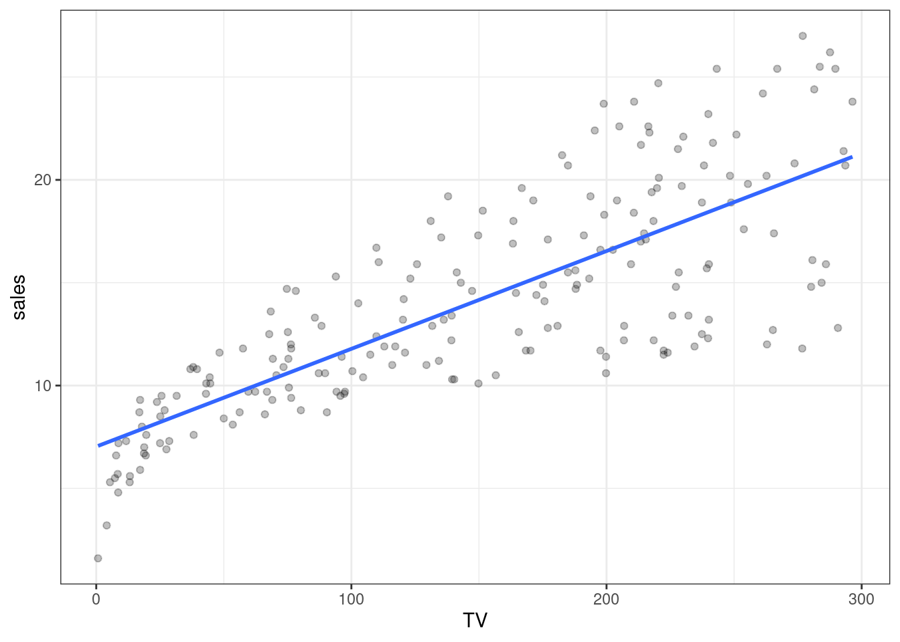
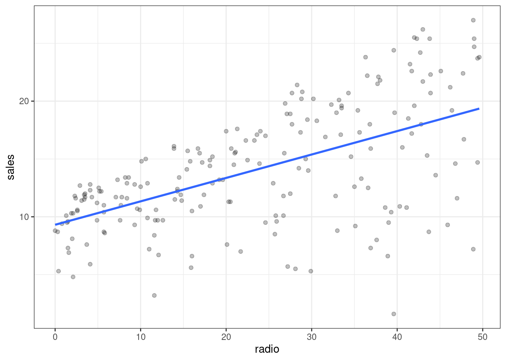
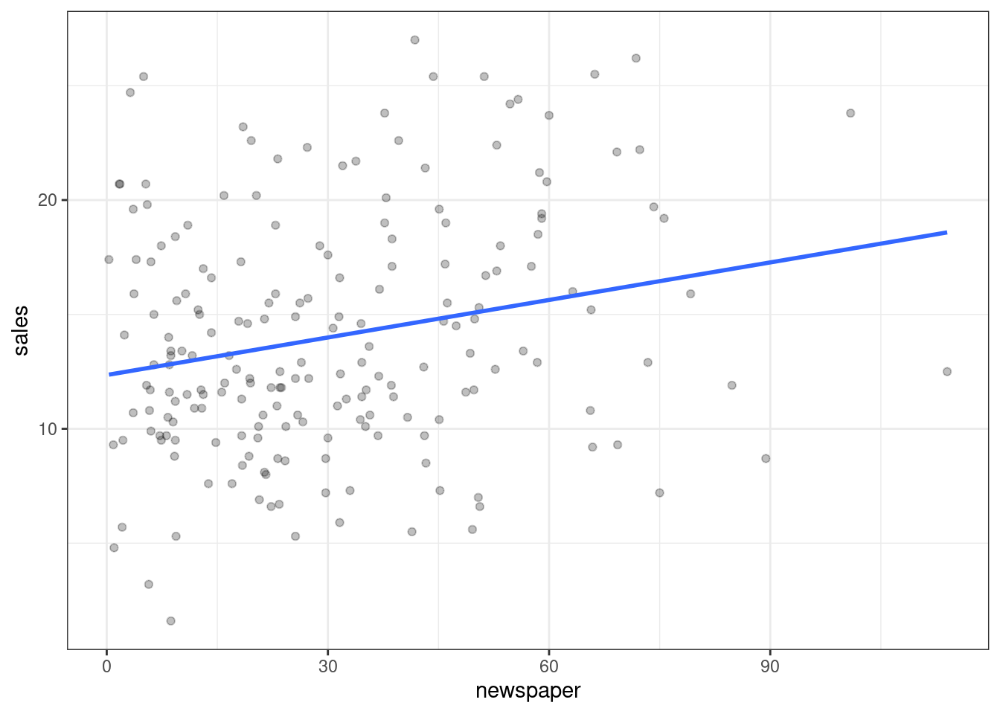
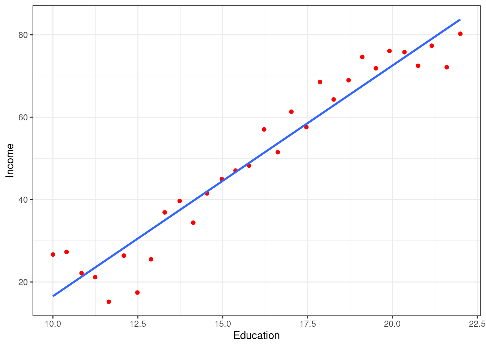

Chapter 2 Statistical Learning
2.1 2.1 What Is Statistical Learning?
Motivating example: > Suppose that we are statistical consultants hired by a client to provide advice on how to improve sales of a particular product. … our goal is to develop an accurate model that can be used to predict sales on the basis of the three media budgets.
## Rows: 200
## Columns: 4
## $ TV <dbl> 230.1, 44.5, 17.2, 151.5, 180.8, 8.7, 57.5, 120.2, 8.6, 199.…
## $ radio <dbl> 37.8, 39.3, 45.9, 41.3, 10.8, 48.9, 32.8, 19.6, 2.1, 2.6, 5.…
## $ newspaper <dbl> 69.2, 45.1, 69.3, 58.5, 58.4, 75.0, 23.5, 11.6, 1.0, 21.2, 2…
## $ sales <dbl> 22.1, 10.4, 9.3, 18.5, 12.9, 7.2, 11.8, 13.2, 4.8, 10.6, 8.6…## Warning: Ignoring unknown parameters: point
## Warning: Ignoring unknown parameters: point
## Warning: Ignoring unknown parameters: point
Input Variables: These are the variables we knoW and can use to build our model. Also known as predictors, independent variables, or features. Denoted using the symbol \(X_n\).
Output Variable: This is the variable we are trying to predict with the model. Also known as a response, or dependent variable. Typically denoted as \(Y\).
More generally: \(Y = f(X) + \epsilon\)
Where \(Y\) is the quantitative response and \(f\) is a function of \(X_1, ..., X_p\) (of \(p\) different predictors) and \(\epsilon\) is some random error term.
Assumptions:
- \(f\) is systematic in its relationship to \(Y\)
- \(\epsilon\) is independent of \(X\)
- \(\epsilon\) has mean zero
Another example: Income and education may appear related, but the exact relationship is unknown. Note that some of the observations are above the linear interpolated line, while some are below it. The difference is \(\epsilon\)
## Warning: Ignoring unknown parameters: point
2.2 2.1.1 Why Estimate f?
There are two main reasons to estimate \(f\):
- Prediction
- Inference
2.2.1 Prediction
Consider: \(\hat{Y} = \hat{f}(X)\)
If \(X\) is known, we can predict \(\hat{Y}\) by this equation. Don’t be too concerned with the exact functional form of \(\hat{f}\).
2.2.1.1 Terms:
- reducible error: This is error that comes with the model. We can address this error by improving the accuracy of the model.
- irreducicle error: This is error introduced to the model, because \(\epsilon\), by definition, cannot be explained by \(X\)
2.2.1.2 Ineference:
2.3 2.1.2 How Do We Estimate f?
2.4 2.1.3 The Trade-Off Between Prediction Accuracy and Model Interpretability
2.5 2.1.4 Supervised Versus Unsupervised Learning
2.6 2.1.5 Regression Versus Classification Problems
2.7 2.2 Assessing Model Accuracy
2.8 2.2.1 Measuring the Quality of Fit
2.9 2.2.2 The Bias-Variance Trade-Off
2.10 2.2.3 The Classification Setting
2.11 2.3 Lab: Introduction to R
2.12 2.3.1 Basic Commands
## [1] 1 3 2 5